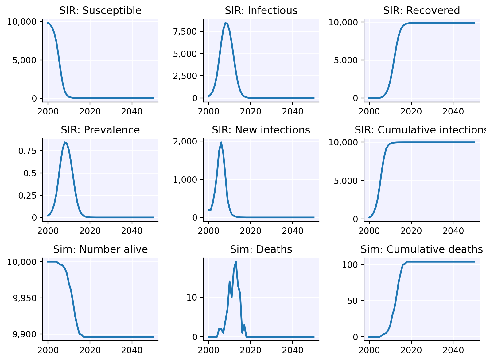

Installing Starsim
Installing Starsim should be straightforward, whether or not you have
Python or reticulate already configured on your
computer.
- Install
devtoolsif you haven’t already:
install.packages("devtools")- Install the R-Starsim package. This installs the R wrapper for Starsim, but not Starsim itself yet.
devtools::install_github("starsimhub/rstarsim")- Load the wrapper:
- Finally, we install Starsim itself. This step will also install
Python (specifically Miniconda) if needed, and will create a virtual
environment (
r-starsim) unless it already exists. Note that this step may take some time (3-10 min depending on your computer and internet connection).
- You can test the install with
ss$demo(), which should run a sim and plot the results.
load_starsim()
ss$demo()